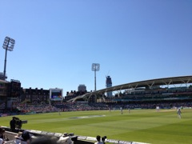

|
Hardknott Pass |
Sellafield or Seascale nuclear reactor… I met Less a few days later - he was a worker at the plant dealing with nuclear flasks shipped from Europe for reprocessing... |
The million dollar view - Wastwater and Scafell peaks |
|
A golden/orange flow on the Screes… This is a spectacular evening.. |
Scafell Pike through the mists... |
Yup, it might look photogenic but its a bit scary.. |
|
The Hercules transport plane makes yet another appearance! These low flybys surely can be distracting... |
Cutting a path through the screes… It still looks and probably is tough walking! |
New friends from Blackpool... |
|
Clouds rolling off Great Gable..... |
Unbelieveably pretty Ennerdale valley comes into view... |
Wet and slippery downhill from Red Pike |
|
Red Pike… the reddish soils is a dead giveaway! |
Enroute to Robinson, the westernmost boundary mountains of the Lake District look quite imposing.. |
The horseshoe trail now makes its way to Dale Head Crag... |
|
A superb sunset over Derwentwater... |
The stone circle of Castlerigg… Helevellyn in the clouds far out... |
Peak of Helvellyn…. Hmm,. so you've just risked life and limb climbing Helvellyn.. It's very windy and there's really no point falling off the trig marker to break a limb NOW? |
|
Langdale, Old Man of Coniston and other peaks off in the distance… It feels great at the top now... |
Sunset seen from the Windermere YHA… near Troutbeck.. |
Darwin House from the outside... |
|
Another 2012 student take.. |
Drinking achievements Take #2 |
Chess Valley on the trail from Chalfont and Latimer to Kings Langley |
|
Happy Valley enroute from Couldson to Woldingham |
 England-SA Test with Peter and Gordon |
Bradley Wiggins pedals past!! And the crowd goes wild... |
|
I also ended up jumping in and buying a Brompton (slightly carried away by Olympic fever and Josh's antics) |
Japan-Egypt one-sided Olympic Quarter Final at Old Trafford, Manchester |
Royal Albert Hall |